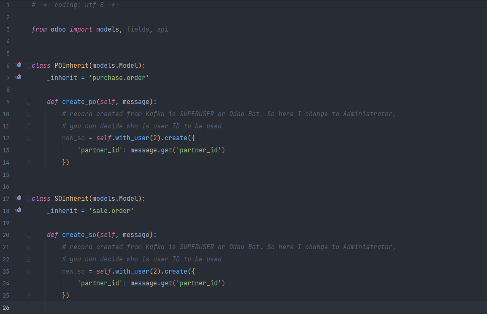

Apache Kafka® Connector
Odoo Kafka Connector - Real-Time Data FetchingFeatures
-
Create multiple KafkaConsumer to run concurrently
-
Configured via Master Consumer
-
Sends a return in the form of JSON to the function parameter specified in the Consumer Master
-
Can turn KafkaConsumer on and off with just click of a button
-
Logger is available in the script, so when a failure occurs it can be investigated via log messages
Requirements
-
Install python library:
pip install kafka-python
Compatibility
Odoo Community and Enterprise Editions with kafka-python libraryHow to use:
# Create Master Consumer
The location of the Master Consumer menu is in Settings => Technical => Automation => Kafka Master Consumer [with user group admin]
-
Fill in the mandatory fields correctly, you can click the GET VALUES button to see the return results from Kafka in JSON format which is useful for mapping values.
# Create Method on Your Custom Module
-
Create a function that will be used to receive JSON and perform certain operations. In this example, the function is to create a new SO record from the captured Kafka message. By default, the user used to run this function is SUPERUSER_ID, you can specify the default user in the function to match record rule user access model.
# Done
-
The logger results when odoo receives a message from KafkaConsumer.
# Sales Quotation Created
-
As a result of executing the function, a new Sales Quotation record has been created. Make sure the function you create has gone through testing so that no errors occur when Kafka is running.
# Stop KafkaConsumer
-
KafkaConsumer will automatically stop when the odoo service is turned off or restarted, but you can turn it off manually by clicking the STOP button in the Form View or Tree View.
The odoo feature allows users to use KafkaProducer by default, with import from kafka import
KafkaProducer. So, this module doesn't provide that feature because it's easy to
do.
To send message to Kafka, just do like the following example:
from odoo import models, fields, api from kafka import KafkaProducer from json import dumps
class POInherit(models.Model): _inherit = 'purchase.order'
@api.model def create(self, values): producer = KafkaProducer(bootstrap_servers=['localhost:9092'], value_serializer=lambda x: dumps(x).encode('utf-8')) for x in self: data = { 'partner_id': 1 } producer.send('po-topic', value=data) producer.flush()
return super(POInherit, self).create(values)
Contact us, if you have any questions or technical assistance.